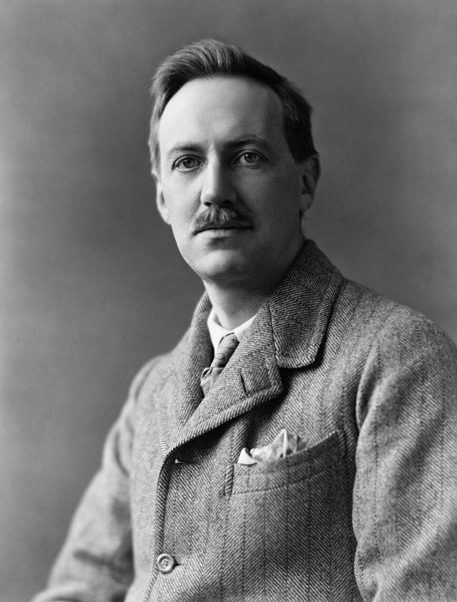

Dunsany's Chess
White to move
White to move

By Morrall-Hoole Studios, restored by Adam Cuerden - This image is available from the United States Library of Congress's Prints and Photographs divisionunder the digital ID cph.3c03850.This tag does not indicate the copyright status of the attached work. A normal copyright tag is still required. See Commons:Licensing., Public Domain, https://commons.wikimedia.org/w/index.php?curid=141595645